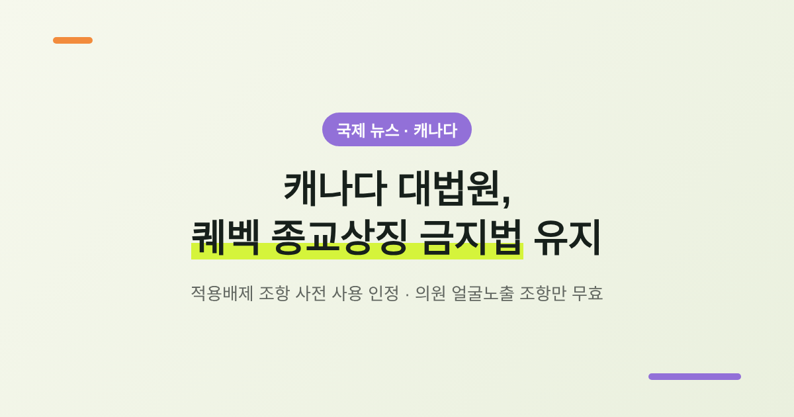
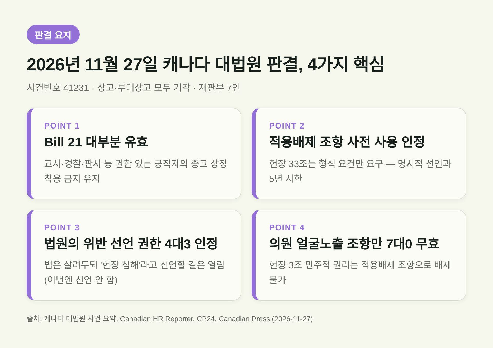
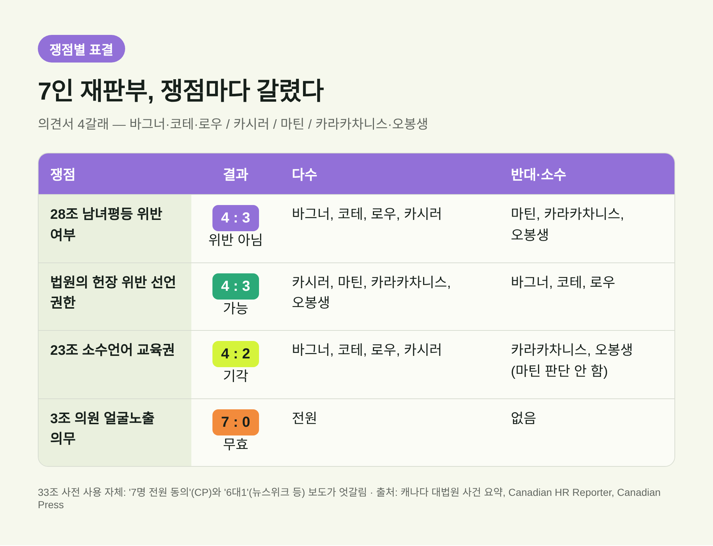
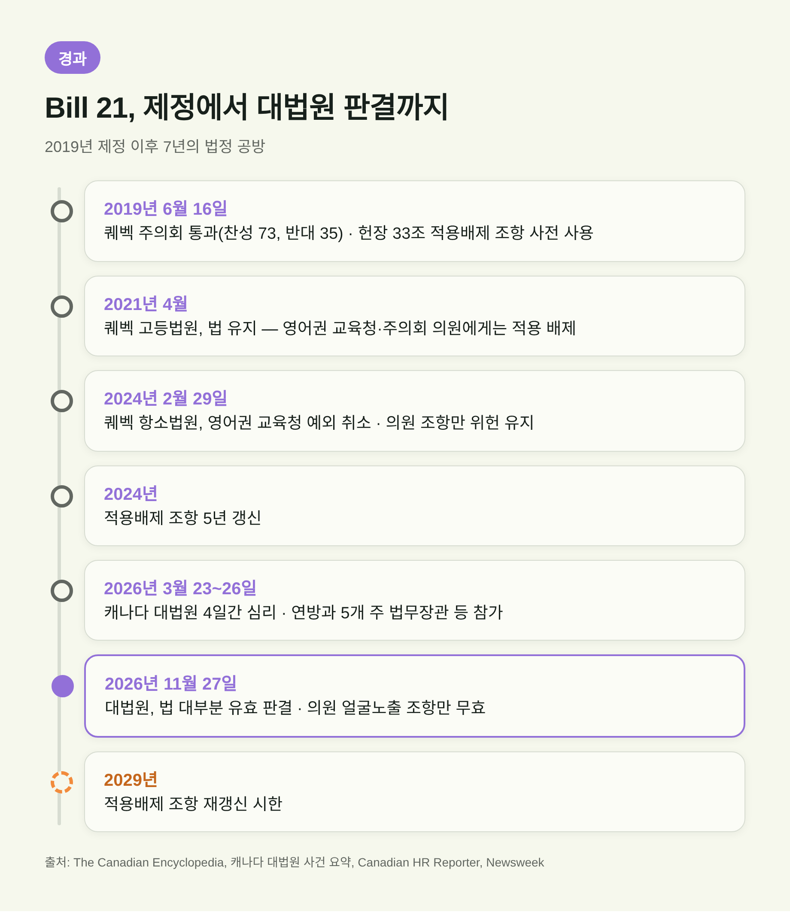
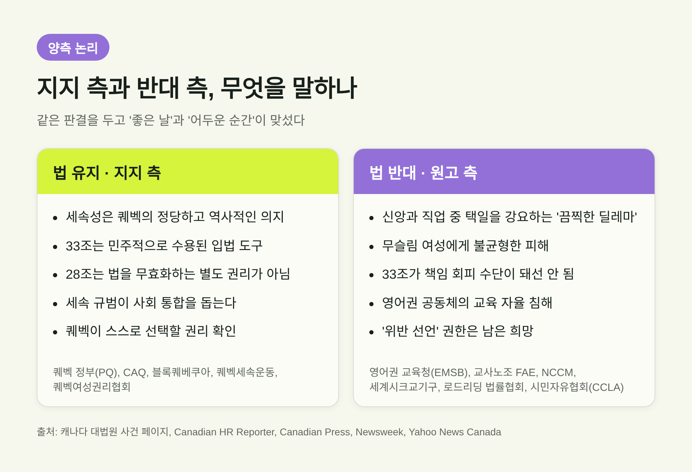
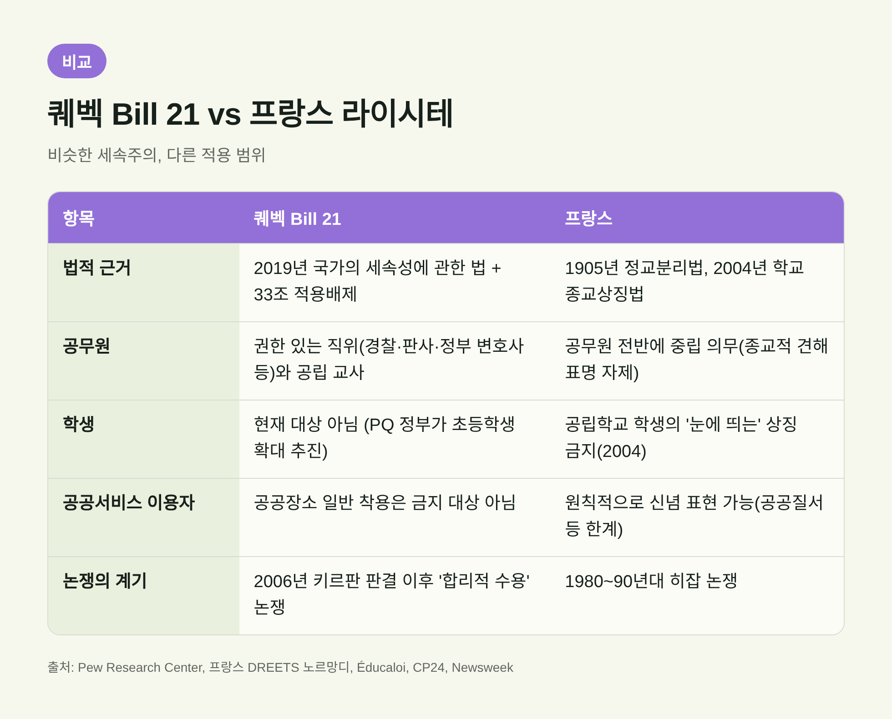
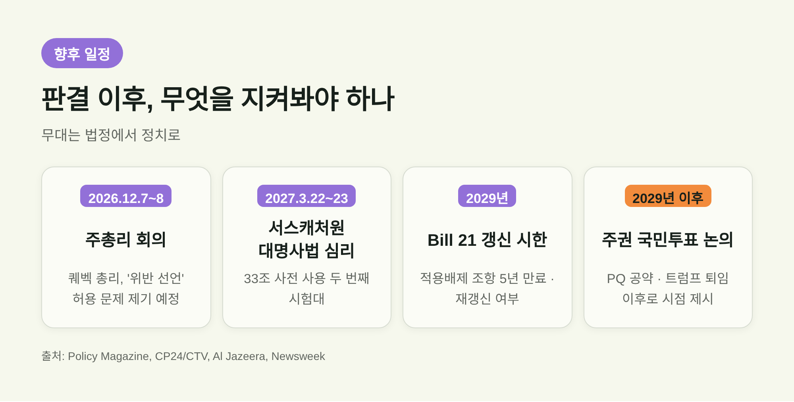

캐나다 대법원 퀘벡 종교상징 금지법 유지, 적용배제 조항 사전 사용 인정

이번 글에서는 캐나다 대법원이 2026년 11월 27일 내린 퀘벡 세속주의법(Bill 21) 판결을 정리해 보겠습니다.
결론부터 말씀드리면, 법의 핵심은 살아남았습니다.
교사·경찰·판사 같은 공직자의 종교 상징 착용 금지는 유지됐고, 주의회 의원에게 얼굴 노출을 요구한 조항 하나만 효력을 잃었습니다.
다만 7인 재판부는 핵심 쟁점에서 4대3으로 갈렸고, 이 판결은 종교의 자유를 넘어 캐나다 연방 구조 전체를 건드리고 있습니다.
■ 무슨 일이 있었나
캐나다 대법원은 잉글리시몬트리올 교육청(EMSB) 등이 제기한 상고와 퀘벡 정부의 부대상고를 모두 기각했습니다.
사건번호 41231, 소송비용은 각자 부담입니다.
Bill 21의 정식 이름은 '국가의 세속성에 관한 법'입니다.
2019년 6월 16일 퀘벡 주의회에서 찬성 73, 반대 35로 통과됐습니다.
당시 집권당 CAQ와 퀘벡당(PQ)이 찬성했고, 자유당과 퀘벡연대는 반대했습니다.
이 법은 권한 있는 직위의 공무원과 공립학교 교사가 근무 중 종교 상징을 착용하지 못하게 합니다.
무슬림 여성의 히잡, 시크교도의 터번, 유대교의 키파, 기독교 십자가가 모두 해당합니다.
공공장소 일반에서의 착용을 막는 법은 아니며, 법 시행 전부터 일하던 사람은 조건부로 예외를 인정받습니다.
대법원이 무효로 본 부분은 단 하나입니다.
주의회 의원(MNA)에게 얼굴을 드러내고 직무를 보라고 한 8조의 해당 부분입니다.
재판관 7명 전원이 이 조항이 헌장 3조의 민주적 권리를 침해한다고 판단했습니다.
3조는 적용배제 조항으로도 배제할 수 없는 권리이고, 퀘벡 정부도 이를 정당화하려 하지 않았습니다.

■ 7인 재판부, 쟁점마다 갈렸다
이번 판결은 '몇 대 몇'이라는 숫자 하나로 요약하기 어렵습니다.
의견서가 네 갈래로 나왔기 때문입니다.
리샤르 바그너 대법원장이 코테·로우 대법관과 함께 주요 쟁점의 다수의견을 썼고, 카시러 대법관, 마틴 대법관, 카라카차니스·오봉생 대법관이 각각 별도 의견을 냈습니다.
쟁점별로 보면 이렇습니다.
- 남녀평등 조항(28조): 4대3으로 위반이 아니라고 판단했습니다. 마틴·카라카차니스·오봉생 대법관은 반대했습니다.
- 법원의 '헌장 위반 선언' 권한: 4대3으로 가능하다고 봤습니다. 카시러·마틴·카라카차니스·오봉생 대법관이 다수였습니다. 다만 이번 사건에서 실제 선언을 내리지는 않았습니다.
- 소수언어 교육권(23조): 4대2로 영어권 교육청의 주장을 받아들이지 않았습니다. 마틴 대법관은 이 쟁점을 판단하지 않았습니다.
- 의원 얼굴 노출 조항(3조): 7대0으로 무효입니다.
적용배제 조항의 사전 사용을 두고는 보도가 엇갈립니다.
캐나다통신(CP)은 재판관 7명 모두 사전 사용 자체는 가능하다고 봤다고 전했습니다.
반면 뉴스위크와 야후뉴스캐나다는 이번 사용이 유효하다고 본 재판관을 '7명 중 6명'으로 보도했습니다.
판결문 원문 대조 전까지는 이 부분을 단정하기 어렵습니다.

■ 왜 중요한가 — 적용배제 조항이라는 '비상문'
이 판결의 진짜 주인공은 종교 상징보다 헌장 33조입니다.
흔히 '적용배제 조항(notwithstanding clause)'이라 부릅니다.
주의회나 연방의회가 특정 법에 대해 일부 헌장 권리를 최장 5년간 적용하지 않겠다고 선언할 수 있게 한 장치입니다.
퀘벡은 2019년 Bill 21을 만들면서 이 조항을 미리 넣었습니다.
법원이 위헌 여부를 따지기도 전에, 종교·양심의 자유와 평등권을 근거로 한 소송을 막아둔 셈입니다.
2024년에 한 차례 갱신했고, 2029년에 다시 갱신해야 합니다.
바그너 대법원장은 33조가 요구하는 것은 형식 요건뿐이라고 정리했습니다.
배제할 헌장 조항을 명시하고, 5년 시한을 지키면 된다는 것입니다.
정부가 긴급한 목적을 입증하거나 법원 판단을 기다릴 필요도 없다고 봤습니다.
그는 이 조항을 '캐나다 모델의 초석'이라 부르며, 1982년 헌법에 동의하지 않은 퀘벡에서 특히 중요하다고 덧붙였습니다.
그러면서도 결정적인 열쇠 하나는 남겨졌습니다.
재판관 4명이 적용배제 조항이 쓰인 법이라도 법원이 '이 법은 헌장 권리를 침해한다'고 선언할 수는 있다고 본 것입니다.
법을 무효로 만들지는 못하지만, 5년 뒤 갱신을 앞둔 유권자에게 판단 재료를 준다는 논리입니다.
예전엔 적용배제 조항이 쓰이면 법원은 사실상 침묵해야 했습니다.
이제는 법을 살려두면서도 '위헌적'이라고 말할 길이 열렸습니다.

■ 법을 지지하는 쪽의 논리
다수의견은 Bill 21이 '국가의 세속성을 보장하려는 퀘벡의 정당하고 역사적인 의지'에 뿌리를 둔다고 판단했습니다.
남녀평등을 규정한 28조에 대해서도, 이 조항이 단독으로 법을 무효화하는 별도 권리를 만들지는 않는다고 봤습니다.
바그너 대법원장은 반대 해석을 따르면 여성의 권리가 다른 소수자 집단의 권리보다 위에 놓이게 된다고 지적했습니다.
영어권 교육청의 주장도 받아들이지 않았습니다.
Bill 21이 교육청의 채용·유지·승진을 제한할 수 있다는 점은 인정했습니다.
그러나 영어권 공동체가 언어와 문화를 지키는 능력 자체를 훼손한다는 증거는 없다고 판단했습니다.
정치권 반응도 뚜렷했습니다.
폴 생피에르 플라몽동 퀘벡 총리는 "퀘벡 세속주의에 좋은 날"이라고 말했습니다.
그는 판결 전날 33조를 "입법자에게 필수적이고 민주적으로 수용된 도구"라고 부르기도 했습니다.
법을 만든 프랑수아 르고 전 총리 측은 "퀘벡이 스스로 선택할 권리를 확인한 역사적 판결"이라고 평가했습니다.
이브프랑수아 블랑셰 블록퀘베쿠아 대표도 대법원이 퀘벡 주의회의 정당성을 인정했다며 환영했습니다.
퀘벡 정부는 세속 규범이 사회 통합을 돕는다고 주장해 왔습니다.
소송에서도 퀘벡세속운동, 퀘벡여성권리협회 같은 시민단체가 법을 옹호하는 쪽에 섰습니다.
■ 반대하는 쪽의 논리
반대 의견을 낸 대법관들의 문장은 무거웠습니다.
카라카차니스·오봉생 대법관은 이 법이 독실한 퀘벡 시민을 '끔찍한 딜레마'에 빠뜨린다고 썼습니다.
신앙과 직업 중 하나를 골라야 한다는 뜻입니다.
마틴·카라카차니스·오봉생 대법관은 법이 무슬림 여성을 불균형하게 겨냥한다고 봤습니다.
1심이 확인한 사실도 인용했습니다.
한 교육서비스센터에서 Bill 21 때문에 종결된 채용 건이 모두 히잡을 쓴 무슬림 여성의 것이었다는 내용입니다.
다수의견을 쓴 바그너 대법원장도 그 영향을 "과소평가해서는 안 된다"고 적었습니다.
소송을 이끈 쪽의 반응은 엇갈린 감정이 섞였습니다.
조 오르토나 EMSB 의장은 원하던 결과는 아니지만 여러 선언에서 위안을 얻는다고 말했습니다.
교육청은 이 소송에 100만 캐나다달러 이상을 썼습니다.
캐나다무슬림전국협의회(NCCM)는 "캐나다 민주주의의 어두운 순간"이라며 싸움을 이어가겠다고 밝혔습니다.
세계시크교기구(WSO)는 깊은 실망을 표했고, 퀘벡이 제한을 더 늘리면 연방정부가 나서야 한다고 촉구했습니다.

■ 연방정부와 주총리들은 어디에 섰나
연방정부의 처지는 미묘했습니다.
2025년 9월 숀 프레이저 연방 법무장관은 대법원 의견서에서 Bill 21의 내용 자체는 다투지 않았습니다.
대신 적용배제 조항의 반복 사용이 '간접적 헌법 개정'이 될 수 있다며 한계를 정해 달라고 요청했습니다.
퀘벡 정부는 "Bill 21에 대한 직접 공격"이라고 반발했고, 2025년 10월에는 주총리 5명이 의견서 철회를 요구했습니다.
판결 뒤 마크 카니 총리는 "사법부의 독립과 헌법을 존중한다"고 짧게 말했습니다.
야후에 재게재된 뉴스위크 보도에 따르면 그는 퀘벡의 조항 사용이 적절했다고 하면서도, 500쪽이 넘는 판결문을 아직 검토 중이라고 했습니다.
주총리들의 반응은 갈렸습니다.
다니엘 스미스 앨버타 주총리는 "주 권리의 승리"라고 반겼습니다.
와브 키뉴 매니토바 주총리는 Bill 21을 비판하면서, 차별받는 시민에게는 선거로 정부를 바꾸는 도구가 있다고 말했습니다.
맥길대 다니엘 벨랑 교수는 앨버타·온타리오·퀘벡·서스캐처원 같은 적용배제 조항 옹호 주들이 판결을 환영했다고 분석했습니다.
■ 프랑스 라이시테와 무엇이 다른가
퀘벡의 세속주의는 흔히 프랑스의 라이시테(laïcité)와 비교됩니다.
비슷해 보이지만 적용 범위가 다릅니다.
프랑스는 1905년 정교분리법으로 국가가 어떤 종교도 공인하거나 재정 지원하지 않도록 했습니다.
2004년에는 공립학교 학생의 '눈에 띄는' 종교 상징 착용을 금지했습니다.
공무원 전체에는 종교적 견해 표명을 삼가는 중립 의무가 있습니다.
반면 공공서비스를 이용하는 시민은 원칙적으로 신념을 드러낼 수 있습니다.
퀘벡 Bill 21은 '권한 있는 직위'와 교사로 대상을 좁혔습니다.
학생은 현재 대상이 아닙니다.
다만 퀘벡당 정부는 초등학생에게까지 제한을 넓히려 하고 있고, 아직 법안을 내지는 않았습니다.
2026년 4월에는 금지 대상 직장을 넓히고 공원·도로의 집단 종교행위에 지자체 승인을 요구하는 세속성 강화법(Bill 9)도 통과됐습니다.
출발점도 다릅니다.
프랑스는 1980~90년대 무슬림 여성의 히잡을 둘러싼 논쟁이 계기였습니다.
퀘벡은 2006년 시크교 학생의 키르판(의례용 단검) 착용을 허용한 대법원 판결 이후 '합리적 수용' 논쟁이 불붙었고, 이것이 2008년 부샤르-테일러 위원회로 이어졌습니다.
흥미롭게도 이 위원회의 위원이었던 제라르 부샤르는 Bill 21을 "급진적"이라며 지지하지 않았습니다.

■ 앞으로 무엇을 지켜봐야 하나
첫째, 다른 주로의 확산 가능성입니다.
2019년 이후 퀘벡·온타리오·서스캐처원·앨버타가 적용배제 조항을 썼습니다.
트랜스젠더 권리 제한, 업무복귀 명령, 퀘벡 언어법 개정 등이 그 대상이었습니다.
이번 판결로 사전 사용이 확인된 만큼, 주정부가 이 조항을 꺼내 드는 문턱은 더 낮아질 수 있습니다.
당장 2027년 3월 22~23일에는 서스캐처원 학교 대명사법 사건 심리가 예정돼 있습니다.
둘째, '위반 선언'이 실제로 어떻게 쓰일지입니다.
생피에르 플라몽동 총리는 "규칙이 바뀌었다"며 이 부분이 정치·법적 불안정을 키운다고 반발했습니다.
그는 12월 7~8일 주총리 회의에서 이 문제를 제기할 계획입니다.
반대로 인권단체들은 다음 갱신 때 유권자를 설득할 근거가 생겼다고 봅니다.
셋째, 퀘벡 정치입니다.
2026년 10월 5일 총선에서 퀘벡당은 59석을 얻어 과반(64석)에 못 미친 소수정부를 꾸렸습니다.
생피에르 플라몽동 총리는 첫 임기 안에 세 번째 주권 국민투표를 공약했지만, 시점은 트럼프 미국 대통령 퇴임 이후로 미뤘습니다.
벨랑 교수는 법이 전면 무효가 됐다면 주권 지지가 고조될 수 있었고, 이번 판결이 미국과의 무역전쟁 속에서 주들의 단결을 바라는 카니 정부의 부담을 덜었다고 봤습니다.
그렇다고 갈등이 끝난 것은 아닙니다.
2029년 Bill 21의 적용배제 조항 갱신 시한, 초등학생 확대 논의, 연방과의 관계가 한꺼번에 맞물려 있습니다.

정리하면 이렇습니다.
대법원은 법을 살려두면서, 그 법을 비판할 언어도 함께 남겼습니다.
퀘벡은 세속주의를 지켰고, 반대 측은 '위반 선언'이라는 새 도구를 얻었습니다.
어느 한쪽의 완승으로 읽기 어려운 판결입니다.
결국 남는 것은 하나입니다.
"법원이 말을 아낀 자리를 이제 유권자가 채워야 한다"는 것입니다.
이 판결로 논쟁이 끝났느냐고 물으신다면, 오히려 무대가 법정에서 선거로 옮겨갔을 뿐이라고 답하겠습니다.
참고자료
- 캐나다 대법원 사건 요약(사건번호 41231) — 2026-11-27
- 캐나다 대법원 사건 페이지(당사자·참가인)
- 캐나다 대법원 심리 공지(재판부 구성) — 2026-03
- CP24 — Supreme Court of Canada upholds Quebec's secularism law — 2026-11-27
- CTV News Montreal — Supreme Court of Canada upholds Quebec's secularism law — 2026-11-27
- Canadian HR Reporter — Supreme Court of Canada upholds Quebec's secularism law — 2026-11-27
- Newsweek — Canada's Supreme Court Upholds Muslim Headscarf Ban in Landmark Ruling — 2026-11-27
- Yahoo(뉴스위크 재게재) — 2026-11-27
- Canadian Press — Five takeaways from the Supreme Court's ruling — 2026-11-27
- Canadian Press — QuickQuotes: Politicians and civil society react — 2026-11-27
- Yahoo News Canada — Supreme Court ruling on Quebec's Bill 21 sparks fierce reaction — 2026-11-27
- Global News — Premiers await Supreme Court ruling on Quebec's secularism law — 2026-11-27
- Policy Magazine — The Return of the Courts to Quebec Politics (Daniel Béland) — 2026-11-27
- CBC(Yahoo) — Ottawa's request for limits on notwithstanding clause a 'direct attack' on Bill 21 — 2025-09-18
- CTV — Five premiers urge Carney to withdraw court submission — 2025-10-07
- The Canadian Encyclopedia — Bill 21
- JURIST — What Quebec's Bill 9 Means for Religious Freedom in Canada — 2026-04-14
- CP24 — 5 takeaways from Quebec election — 2026-10-06
- Al Jazeera — Secessionist Parti Quebecois wins Quebec election — 2026-10-06
- CP24 — Hearing date set for Sask. pronoun policy case — 2026-11-19
- Pew Research Center — 100th Anniversary of Secularism in France — 2005-12-09
- DREETS Normandie — La laïcité dans les services publics
- Éducaloi — Secularization and Laicity